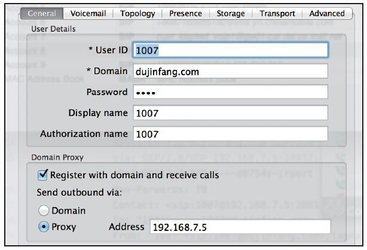

15.7 多租户
很多人将FreeSWITCH用于云计算平台，而VoIP云计算除了要支持大规模的并发呼叫外，更重要的是要支持多租户 [1] 技术。简单来讲，多租户就是在一个系统中（或更简单点，一台FreeSWITCH服务器上），支持多个彼此相互独立的PBX（如属于不同公司的）应用，这些不同的PBX中可能有相同的分机号，而不会产生冲突。
FreeSWITCH在设计之初就考虑到了这一点，它是用Domain实现的。
15.7.1 Domain简介
说起Domain，大家一般都会联想到域名，或者更精确一点说，联想到一个FQDN [2] 。但FreeSWITCH中的Domain是指一个域，或者在这里我们说到多租户的时候，可以说它指一个租户。实际上，它就是唯一标志一个域的字符串。当然，由于它可以是任意的字符串，那么用实际的域名和IP地址也是没有问题的。但是，要记住，虽然你可以使用域名或实际的IP地址作为Domain，但并不表示Domain跟域名或IP地址以及DNS有任何关系，FreeSWITCH也永远不会把Domain通过DNS解析成域名，反之亦然。
讲到这里，读者可能听得一头雾水，那么为什么把问题搞这么复杂呢？答案很简单，为了支持多租户。
我们首先来看一下conf/vars.xml中如下的配置：
<X-PRE-PROCESS cmd="set" data="domain=$${local_ip_v4}"/>
<X-PRE-PROCESS cmd="set" data="domain_name=$${domain}"/>
其中，上述配置配置了两个全局变量domain和domain_name，前者用作一个核心变量——当系统需要一个Domain值，而通过当前的环境又找不到这么一个值时，就用该变量的值顶替；而后者用作一个Dialplan中的变量，它只是跟每一通电话相关的。当然默认两者的值都等于local_ip_v4的值。而local_ip_v4是一个动态计算出的变量值，它一般是当前能上网的网卡的IP地址（在取不到的情况下可能为127.0.0.1）。通过将local_ip_v4的值设成两个变量的默认值是因为这样的话在默认安装后不需要任何配置就可以在所有环境中都正常使用。
为了说明Domain跟实际的FQDN域名没有任何关系，我们来做如下实验。首先，如图15-7所示，在Domain中填入“dujinfang.com”。注册时选择“Send outbound via Proxy”，并在Proxy中输入FreeSWITCH的IP地址。在本例中，笔者试验的客户端和服务器的IP地址都是192.168.7.5。

图15-7 通过Proxy注册
经过这样配置后，我们在FreeSWITCH中开启SIP trace可以看到如下的注册消息（为了方便讲解我们加了行号）：
01 --------------------------------------------------------------
02 recv 789 bytes from udp/[192.168.7.5]:28812 at 15:36:21.277729:
03 --------------------------------------------------------------
04 REGISTER sip:dujinfang.com SIP/2.0
05 Via: SIP/2.0/UDP 192.168.7.5:28812;branch=z9hG4bK-d8754z-...
06 Max-Forwards: 70
07 Contact: <sip:1007@192.168.7.5:28812;rinstance=af02322f2d5c82ba>
08 To: "1007"<sip:1007@dujinfang.com>
09 From: "1007"<sip:1007@dujinfang.com>;tag=a3e90a4e
10 Call-ID: ZTBhNGVkMTJlOGQzMDZlNjJjN2E2MjQ5NGEzZTZmM2U
11 CSeq: 2 REGISTER
12 Expires: 3600
13 Allow: INVITE, ACK, CANCEL, OPTIONS, BYE, REFER, NOTIFY, MESSAGE, SUBSCRIBE, INFO
14 User-Agent: Bria 3 release 3.5.0b stamp 69410
15 Authorization: Digest username="1007",realm="dujinfang.com",
nonce="40dbf2e3-e5f6-4ee3-badf-855253b12c02",uri="sip:dujinfang.com",
response="14337381cc0302574b6c39948fbea98f",
cnonce="0c61ee029710dbf6b740dce279c651fa",
nc=00000001,qop=auth,algorithm=MD5
16 Content-Length: 0
该消息不是第1个注册消息，而是在收到401响应后，计算出带有Authorization头的第2个注册消息。其中，我们可以看到，该消息确定发送到了我们在客户端上设置的SIP Proxy的IP地址上，而与我们以前经常使用的Domain中的“dujinfang.com”没有任何关系。在这时，“dujinfang.com”是一个合法的域名，但它没有在DNS中解析到192.168.7.5这个IP地址上。由此你可以看到，在此处的客户端上的Domain中，你在练习的时候可以填入任意值，当然填写不属于你自己的域名（如“apple.com”或“microsoft.com”，以及本例子中属于笔者的域名等）是非常不明智的。
第4行称为Request Line，可以看到“dujinfang.com”也出现在这里，同理，它也出现在第8行、第9行以及第15行等。
关于Domain我们就先介绍到这里，事实上，如果读者没有亲身的实践，在这里笔者是很难讲清楚的。就连FreeSWITCH的作者Anthony Minessale也花了一小时在邮件列表中讲这个问题，当然，他讲得是非常有参考意义的。参见http://lists.freeswitch.org/pipermail/freeswitch-users/2013-August/099131.html。下面我们通过实际的例子来看一下如何通过Domain设置多租户，希望读者最终能够理解这里的意思。
15.7.2 配置与实例
上面讲到的注册是可以成功的，而且我们在SIP消息中看到到处都是我们设置的Domain（dujinfang.com）。但是是否注册成功了就说明这支持多租户了呢？答案是否定的。我们还需要做一些工作。首先，我们用以下Dialplan测试一下，看domain及domain_name两个变量能告诉我们什么。
<extension name="Domain">
<condition field="destination_number" expression="^1234$">
<action application="log" data="INFO domain=${domain}"/>
<action application="log" data="INFO domain_name=${domain_name}"/>
</condition>
</extension>
通过上述Dialplan的设置，在拨打1234后，我们在日志中可以看到如下输出：
[INFO] mod_dialplan_xml.c:558 Processing 1007 <1007>->1234 in context default
[INFO] mod_dptools.c:1595 domain=192.168.7.5
[INFO] mod_dptools.c:1595 domain_name=192.168.7.5
可以看出，由于domain是一个核心的变量，它继续保持192.168.7.5这个IP地址值倒也罢了，但domain_name也不变，我们根据什么来做多租户的路由呢？即我们根据凭什么说这是某某域里的1007发起的呼叫而不是另一个域中的1007发起的呢？
其实，这是由于FreeSWITCH默认安装要在所有环境下都有运行 的根本宗旨决定的，要达到我们的要求，需要检查Profile（internal）中的如下参数：
<param name="force-register-domain" value="$${domain}"/>
<param name="force-subscription-domain" value="$${domain}"/>
<param name="force-register-db-domain" value="$${domain}"/>
可以看出，在默认的配置中，上述参数都是生效的，也就是说，不管你的Domain怎么配置，都让它强制（force）成了默认的Domain。因此，在此我们需要删除这些参数（或者在配置文件中注释掉这些行）。然后，重启该Profile，再次注册时就会看到如下的警告，而且，我们的SIP客户端再也注册不上了。
[WARNING] sofia_reg.c:2679 Can't find user [1007@dujinfang.com] from 192.168.7.5
You must define a domain called 'dujinfang.com' in your directory
and add a user with the id="1007" attribute
and you must configure your device to use the proper domain
in it's authentication credentials.
虽然是个警告，但是个好的警告，它至少告诉我们它在配置文件中找不到这个Domain和这个用户了。我们看一看默认的用户目录配置文件conf/directory/default.xml，它里面定义了一个Domain，是默认的“$${domain}”值，具体如下：
<include>
<!--the domain or ip (the right hand side of the @ in the addr-->
<domain name="$${domain}">
<params>
......
找到它后，我们只需要照着它复制一份新的就好了（这里当然也可以把“$${domain}”改成我们想要的“dujinfang.com”，但我们除此之外还要加别的Domain，因而到后面总是要复制的）。
将上述文件复制到conf/directory/dujinfang.com.xml，然后修改其中的domain_name为如下的值：
<domain name="dujinfang.com">
在FreeSWITCH控制台中执行reloadxml使之生效，然后，重新注册客户端，就发现能注册成功了。通过如下的命令也能列出注册信息：
freeswitch> sofia_contact 1007@dujinfang.com
sofia/internal/sip:1007@192.168.7.5:34088;rinstance=d3ba18cdf1903f17
freeswitch> sofia status profile internal reg 1007
Registrations:
==============================================================================
Call-ID: ZWRhZjA3NjI0NjYxODA1MDdkOGI0YzYxZWVkNGRmZjA
User: 1007@dujinfang.com
Contact: "1007" <sip:1007@192.168.7.5:34088;rinstance=d3ba18cdf1903f17>
Agent: Bria 3 release 3.5.0b stamp 69410
Status: Registered(UDP)(unknown) EXP(2013-10-20 00:56:40) EXPSECS(94)
Host: seven.local
IP: 192.168.7.5
Port: 34088
Auth-User: 1007
Auth-Realm: dujinfang.com
MWI-Account: 1007@dujinfang.com
接着，拨打1234进行测试，就可以看到如下的输出了：
[INFO] mod_dialplan_xml.c:558 Processing 1007 <1007>->1234 in context default
[INFO] mod_dptools.c:1595 domain=192.168.7.5
[INFO] mod_dptools.c:1595 domain_name=dujinfang.com
从中可以看出，这里的domain_name变量也变成我们期望的值了。
15.7.3 进阶
当然，我们新建的dujinfang.com.xml与原来的default.xml都装入了conf/directory/default目录下的用户配置文件。既然是不同的租户，我们就需要把它们分开，因此我们也把整个default目录复制一份，放到到新的dujinfang.com目录中，并且将dujinfang.com.xml中的“include”一行改为：
<users>
<X-PRE-PROCESS cmd="include" data="dujinfang.com/*.xml"/>
</users>
还没有完，我们要让自己域中的用户使用单独的Dialplan进行路由，因此进入dujinfang.com目录，将里面所有的用户配置文件（如1007.xml）中的user_context参数全部改成如下的值：
<variable name="user_context" value="dujinfang.com"/>
执行reloadxml命令后再拨打1234发现打不通了，原因很显然，我们还没有在Dialplan中设置dujinfang.com这个Context。当然，设置它也很简单。进入conf/dialplan/目录，将default.xml复制为dujinfang.com.xml，并将里面的Context的名称修改为我们需要的值，如：
<include>
<context name="dujinfang.com">
再一次执行reloadxml命令并拨打测试，就可以看到，我们这里的路由也跟默认的配置完全分离了。这就基本上达到了我们想要的效果。读者接下来可以参照这里的步骤再配置几个新的域以对比测试。
15.7.4 其他
使用多Domain（及多Directory、多Dialplan）支持多租户以后，有以下几个事情是需要注意的：
·Dialplan中的呼叫字符串不能再使用类似“user/1000”这样的缩写形式了，而要写成如“user/1000@${domain_name}”的形式。
·在使用会议、fifo等类的应用时，注意不要像本书中的例子一样图省事 [3] 把会议的名称写成“3000”或把fifo的名称写成“book”，一定要写成如“3000-${domain_name}”或“book@${domain_name}”之类带Domain的长名字。
·在实际应用中Domain可以与实际的FQDN相同，最好能使用DNS的SRV记录进行解析。不同的机构可以使用不同的域，如dujinfang.com、microsoft.com等；同一个机构不同的分支机构间也可以使用不同的域，如beijing.dujinfang.com、shanghai.dujinfang.com等。
·如果需要计费，话单等也是需要特别注意的。
·除此之外，还可以进一步细分，将不同的租户分到不同的Sofia Profile中去。即每个租户都有自己的的Profile（分别占用不同的端口号），它们的Profile中的信息及各种参数都可以不同。当然，若所有的租户都想使用5060这样的端口号，则可以使用DNS的SRV记录来解决。关于SRV记录的用法超出了本书的范围，读者可以自行研究。
[1] Multitenancy。参见http://en.wikipedia.org/wiki/Multitenancy。
[2] Fully qualified domain name，译作完全资格域名，或绝对域名。参见http://en.wikipedia.org/wiki/Fully_qualified_domain_name。
[3] 当然，也不完全是为了省事，有时候是因为太长的行在书中不容易排版。